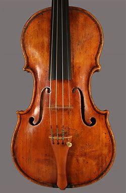

VIOLIN
The violin is a string instrument known for its expressive range, versatility, and beautiful sound.
It is one of the most popular instruments in classical music and is widely used in various music genres,
including folk, jazz, and contemporary styles
Structure of the Violin
- Body: The main part of the violin, made of wood, usually maple, spruce, and ebony. It has a hollow structure, which helps produce a resonant sound.
- Strings: The violin has four strings, tuned in perfect fifths: G, D, A, and E, from lowest to highest. These strings are made of gut, synthetic materials, or steel.
- Bow: The violin is played with a bow, which is a stick of wood (usually pernambuco or carbon fiber) strung with horsehair. The bow is drawn across the strings to produce sound.
- Fingerboard: The player presses the strings against the fingerboard to change the pitch of the notes.
- Bridge and Sound Post: The bridge supports the strings, transferring vibrations to the violin's body, while the sound post inside the violin helps maintain its structure and sound quality.
